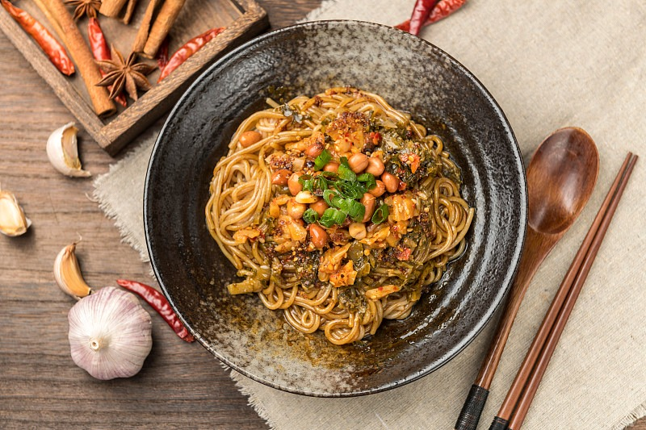
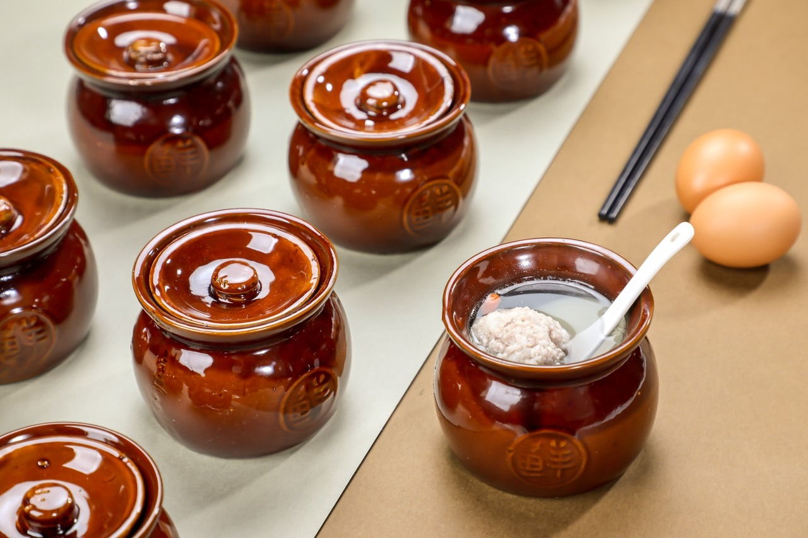
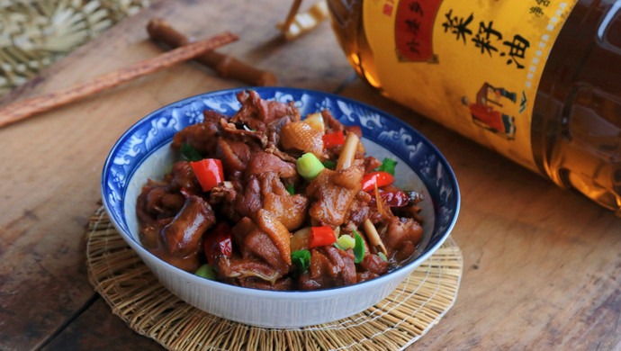
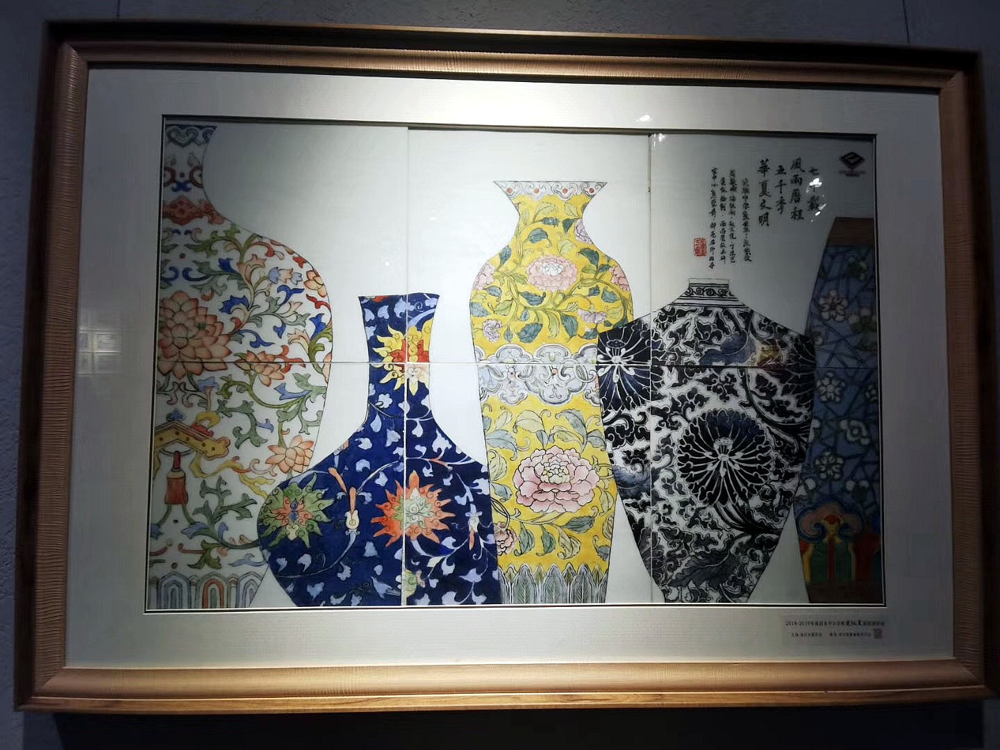

雅集请柬 · 赣鄱风物 · 食盒呈味
悬停展开，品读诗笺背后的故事




提前线上预订，刷身份证或二维码直接入园
景区21:00停止入园前可订当日票，每个身份证每天限购1张。凭本人身份证或订单二维码刷闸机入园。
滕王阁常态化演出《寻梦滕王阁》为大型沉浸式实景演出，需单独购票。建议提前通过官方渠道预订座位。
6周岁（含）或身高1.4米（含）以下儿童免费。65岁以上老人、现/退役军人、残疾人、记者凭有效证件免票。
订单未使用7天内可申请原路退款，已取票的订单不支持退款。所有订单不支持改期，请合理安排行程。
让您的滕王阁之行更加顺畅